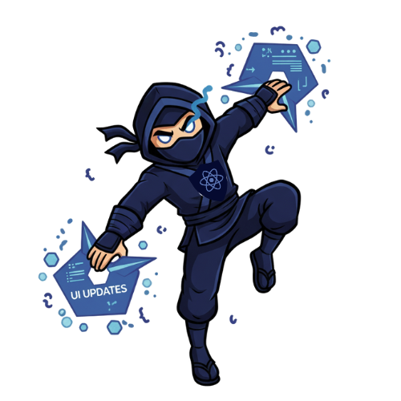
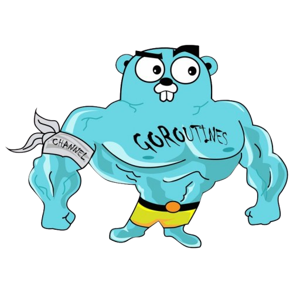
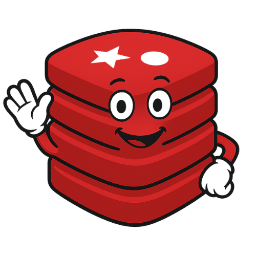
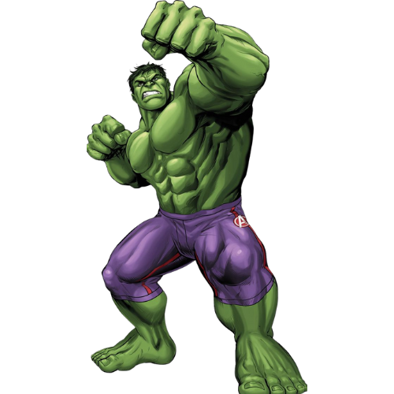
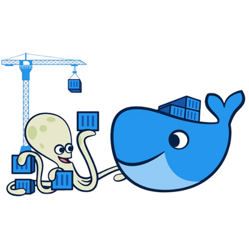
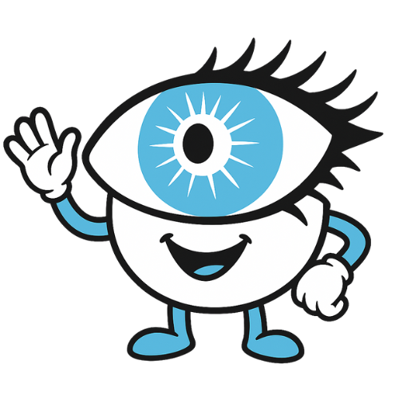

KIT DE SOBREVIVÊNCIA • SNCT 2025
Um guia rápido para entender como o sistema funciona sem "tech-ês".
Para entender como processamos milhões de votos, imagine o sistema como uma lanchonete gigantesca:

É o Cardápio Digital (totem) onde você clica para escolher seu lanche.
São os Atendentes do Caixa. Eles são super rápidos, apenas anotam o pedido e jogam o papel para a cozinha. Eles não cozinham!
É o Varal de Pedidos na cozinha. O pedido fica ali esperando.Técnico: Protocolos de comunicação.
A Analogia: HTTP é como mandar uma carta: você envia, espera e recebe uma resposta. WebSocket é como uma chamada telefônica: a linha fica aberta e os dois lados falam a qualquer hora.
Usamos WebSocket para atualizar os votos em tempo real!
Técnico: Modelo de consistência em sistemas distribuídos.
A Analogia: O Placar do Estádio vs. A Súmula do Juiz. O placar muda na hora (rápido), mas a verdade absoluta oficial (banco de dados) pode demorar alguns milissegundos para ser carimbada.
Priorizamos velocidade; os dados se alinham "eventualmente".
Técnico: Controle de tráfego de rede.
A Analogia: A Catraca do Metrô ou o Segurança da Balada. Só deixa passar X pessoas por minuto. Se tentar passar 100 pessoas de vez na porta, trava.
Técnico: Armazenamento em memória volátil.
A Analogia: A Memória de Curto Prazo do atendente ou uma Cola na Mão. É muito mais rápido olhar para a mão do que ir buscar o arquivo lá na gaveta do escritório (Banco de Dados).
Existem dois jeitos de fazer o sistema aguentar mais tranco:

Escalabilidade VerticalA Estratégia do "Hulk"
Você pega o servidor atual e coloca mais memória, mais CPU e um SSD mais rápido.
A Estratégia dos "Minions"
Você não melhora a máquina. Você compra 10 máquinas baratas e coloca elas para trabalharem juntas.
🌟 É isso que vamos mostrar hoje!
A linguagem do Backend. Famosa por conseguir fazer milhares de coisas ao mesmo tempo (concorrência) sem suar.
A biblioteca do Frontend. É quem desenha a tela e faz tudo parecer um aplicativo de celular fluido.
O "The Flash" do sistema. Usado para filas rápidas e cache. Se piscar, ele já processou.

DockerA "Marmita Térmica". Garante que o código que rodou no computador do Éric vai rodar igual no servidor, sem estragar.

CassandraO "Cofre Indestrutível". Diferente do Redis (que é rápido, mas volátil), o Cassandra grava no disco e espalha cópias dos votos. Se um servidor explodir, o voto está salvo em outro.